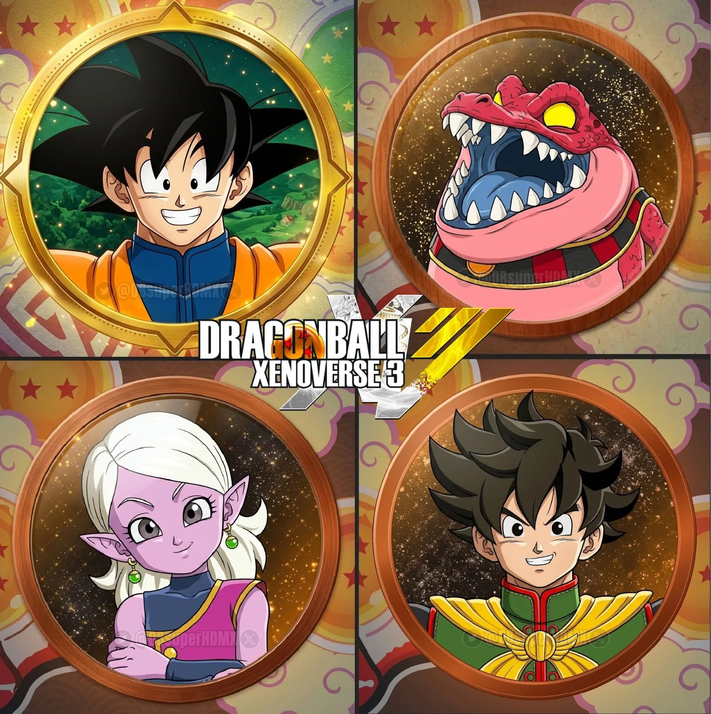

marianoramosssss · 11 de septiembre de 2026 · 2 min de lectura
Resulta que, por un fallo temporal en la interfaz de programación (API) de Steam, un montón de logros que tenían que mantenerse privados quedaron accesibles para cualquiera. El problema fue que páginas externas como Exophase, que rastrean trofeos automáticamente, chuparon toda esa información y la indexaron de forma masiva antes de que alguien en Valve pudiera frenar el proceso.
¿El resultado? Más de 50 juegos en desarrollo quedaron al descubierto, exponiendo nombres internos, personajes y mecánicas de títulos inéditos o no anunciados.
Xenoverse 3: Spoilers de la historia, nuevos personajes y lavado de cara
Para los que bancamos a muerte la saga de peleas y rol, esta filtración fue una bomba llena de novedades, aunque a Bandai Namco le debe haber arruinado un par de sorpresas:
Rumores confirmados: Esta fuga de logros confirma los rumores sobre el desarrollo de Dragon Ball Xenoverse 3, apuntando a ser un lanzamiento importantísimo de la saga para el año 2027.
Goku de estreno: Las imágenes de los logros que empezaron a circular en redes sociales muestran a varias leyendas del manga, revelando que Goku tendrá un aspecto totalmente renovado para esta entrega.
La historia, expuesta: A través de las descripciones de estos trofeos filtrados, se terminaron conociendo posibles detalles sobre la trama, además de nuevos diseños de personajes y sorpresas que iban a aparecer más adelante.
CAYERON OTROS EN LA VOLTEADA, PERO ESO ES TEMA PARA OTRO DIA...
Si pensabas que solo ligó el juego de Goku y los nuevos guerreros de 100 años depues, estás muy equivocado. El error dejó expuestos proyectos enormes de varias compañías que ni siquiera tenían una ventana de lanzamiento tentativa.
En la lista de afectados aparecieron juegos ultra esperados como Persona 6, Gears of War E-Day y Kingdom Hearts 4. Hasta se filtraron proyectos en desarrollo sobre franquicias gigantes como Los Vengadores, Dune y The Walking Dead. Por ahora, tanto Valve como las desarrolladoras se llamaron a silencio y no salieron a dar explicaciones sobre el incidente.
¿A vos te copa enterarte de estas cosas por filtraciones o preferís aguantar la manija hasta que salgan los tráilers oficiales?
¿Tenes ganas de que te lo contemos en otras notas, más a detalle?